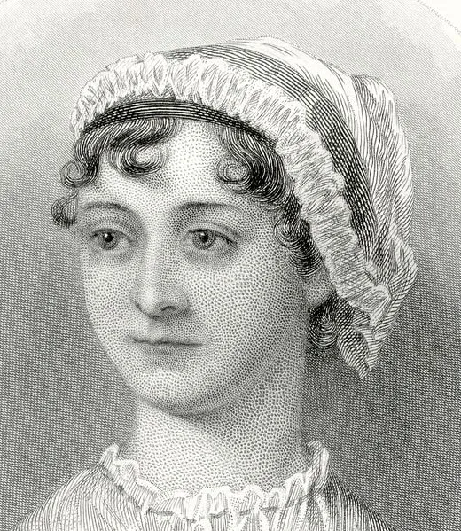

Jane Austen foi uma romancista inglesa do final do século XVIII e início do século XIX, conhecida por suas obras que retratavam a sociedade inglesa em sua época. Nascida em 1775 em Steventon, Hampshire, Inglaterra, ela foi a sétima de oito filhos.
Seu pai era um clérigo anglicano e ela cresceu em um ambiente literário, cercada por livros e escritores.
Austen começou a escrever suas primeiras obras na adolescência, mas foi apenas na idade adulta que ela começou a publicar seus livros.
Seus romances eram geralmente comédias de costumes que exploravam as tensões sociais e as pressões das expectativas culturais da época.
Suas heroínas eram frequentemente mulheres inteligentes e independentes, que tinham que navegar nas complexidades dos relacionamentos e da sociedade para encontrar a felicidade.
As principais obras de Austen incluem "Orgulho e Preconceito", "Razão e Sensibilidade", "Emma" e "Persuasão". Seus livros se tornaram populares em sua época e continuam a ser lidos e adaptados para o cinema e televisão até hoje.
Austen nunca se casou e viveu a maior parte de sua vida com sua mãe e irmã. Ela morreu em 1817, aos 41 anos, de uma doença não diagnosticada.
Embora tenha vivido por pouco tempo, suas obras tiveram um impacto duradouro na literatura e na cultura popular. Austen é considerada uma das maiores escritoras da língua inglesa e sua obra continua a ser estudada e admirada em todo o mundo.